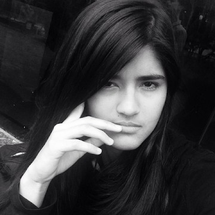
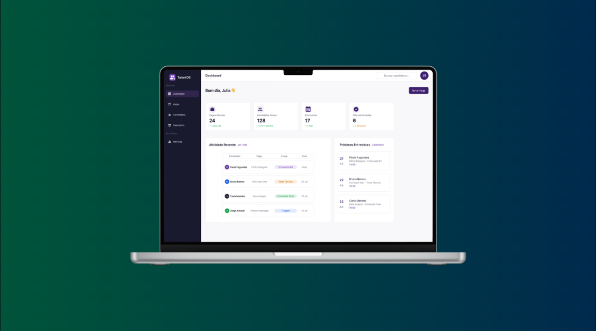
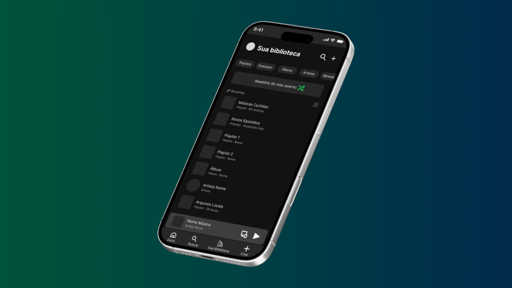
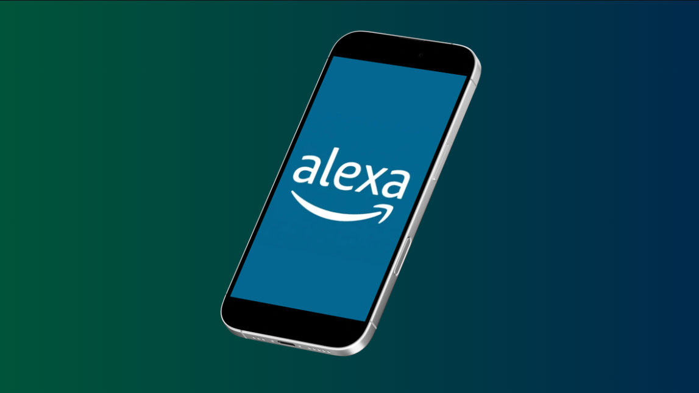
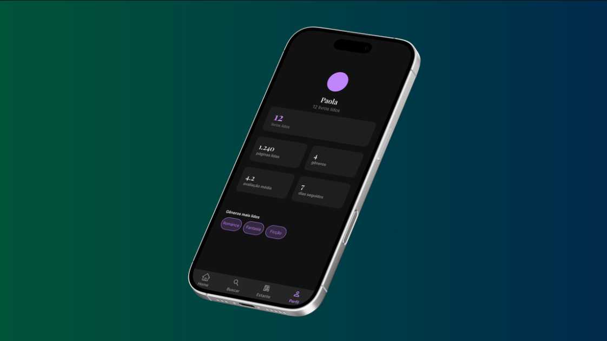
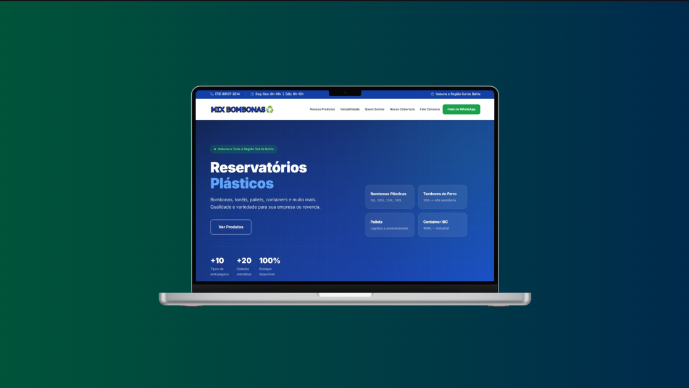
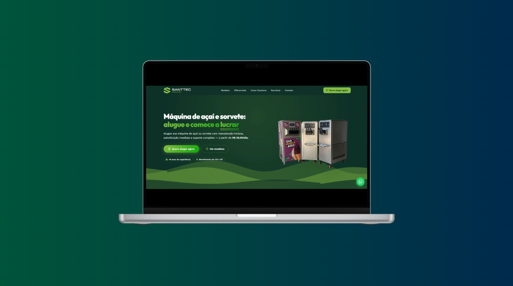
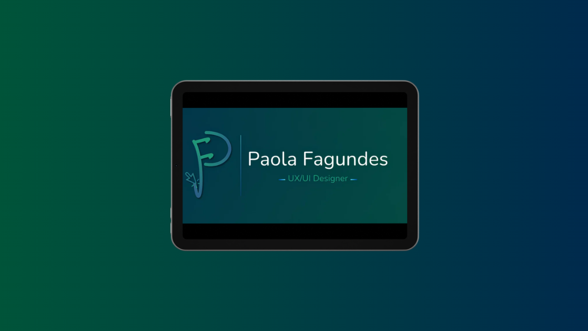
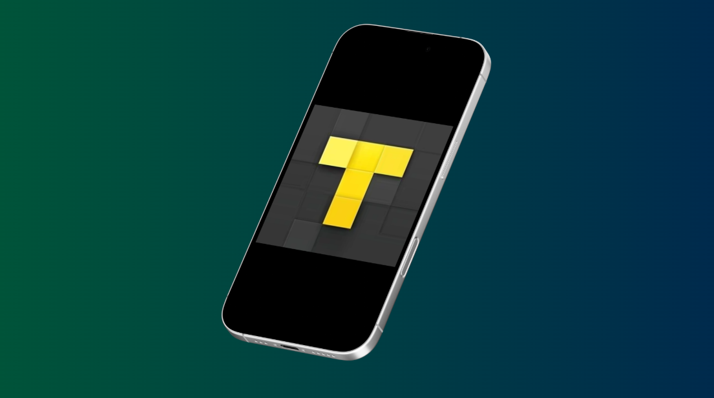
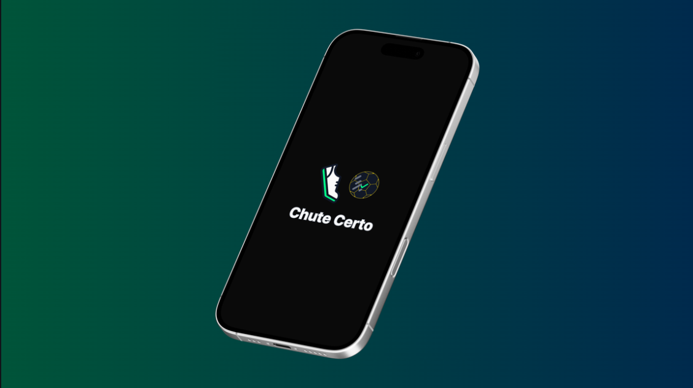

Proponho soluções digitais claras, acessíveis e bem pensadas.

UX/UI Designer com bacharelado em Sistemas de Informação e pós-graduação em andamento em Design de Produtos Digitais (UX/UI). Experiência prática no Figma com wireframes, protótipos interativos, fluxos de usuário e Design System, além de criação de sites com ferramentas de IA e no-code. Busco oportunidades em design de produtos digitais com foco em interfaces que equilibram clareza visual e lógica de navegação.
Inglês: IntermediárioProcesso, Design e Tecnologias.
Confira meus trabalhos até aqui.

Design de interface para SaaS de recrutamento com 12 telas, Design System e protótipo navegável.

Proposta de funcionalidade para reprodução aleatória de todo o acervo pessoal do usuário.

Estudo de caso sobre falhas de interoperabilidade entre Amazon Echo Pop e TVs LG e Samsung, com proposta de melhorias no app Alexa.

Aplicativo mobile projetado para ajudar leitores a registrar e acompanhar suas metas de leitura.

Site institucional para venda de embalagens plásticas de grandes volumes (bombonas, tonéis e containers).

Site institucional para locação de máquinas de sorvete e açaí.

Criação da minha identidade visual, incluindo logomarca e paleta.

Avaliação de apps substitutos ao TV Time e análise de UX do Suite TV, o app escolhido.

Design System escalável do zero com multi-mode variables, componentes animados, cronômetro funcional e protótipo navegável com lógica.